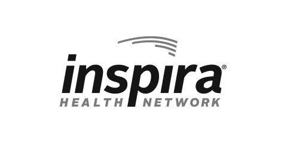
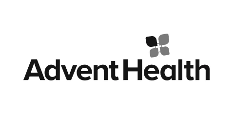
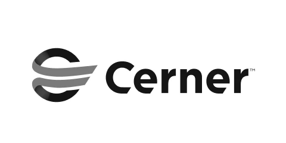
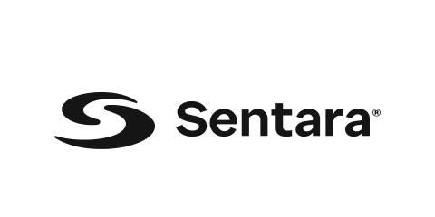
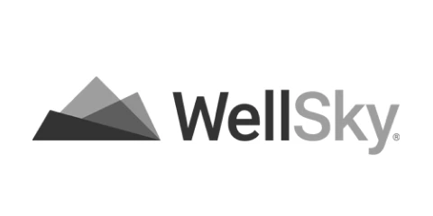
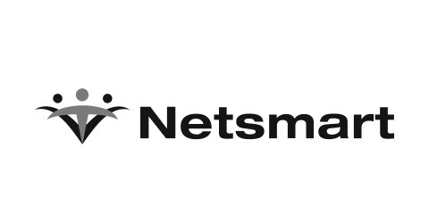

Better Healthcare Data for Better Healthcare Outcomes
Hart’s innovative data interoperability platform integrates multiple
sources and data types into a seamless, unified healthcare resource

Successful Healthcare Deployments





